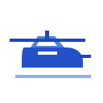

Aperçu des icônes et illustrations
Comparaison des couleurs en mode clair et en mode sombre.
Icônes d’interface
Mode clair
Mode sombre
Illustrations du parcours
Mode clair

Comparaison des couleurs en mode clair et en mode sombre.
